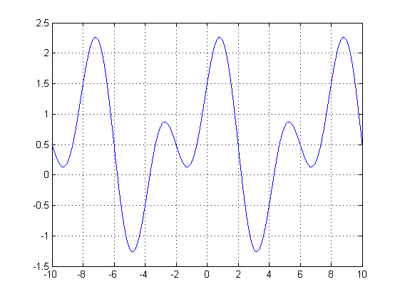
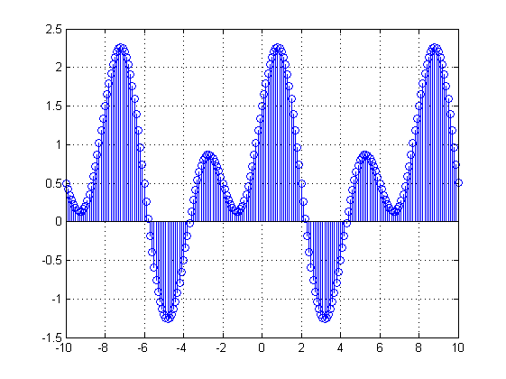
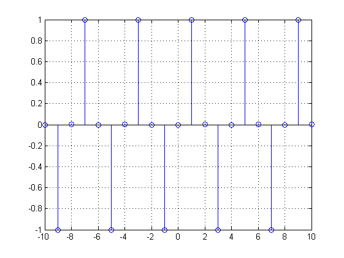
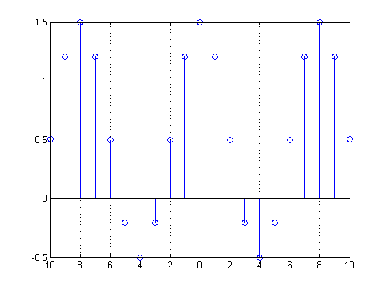
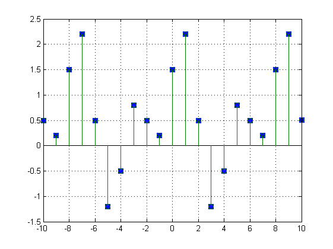
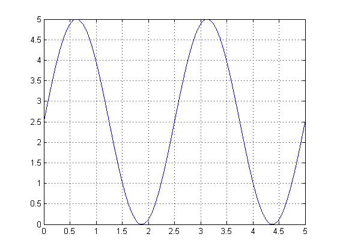
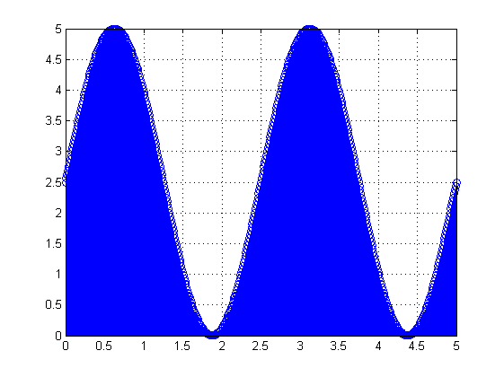
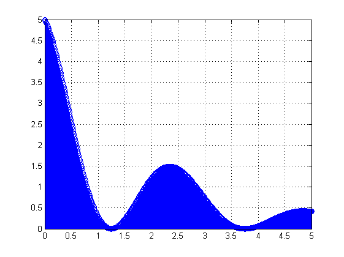

Laboratório nº 1 de Sistemas e sinais
Alunos: Ricardo Leitão nº69632 , Fábio Almeida nº70227
Turma/Turno: 3b
Grupo: 05
Data: 06/03/2012
Contents
Exercício 1.i) sen
sin(0.5*pi*t): A frequência angular é 0.5pi. A frequência em Hertz é:
f = 0.5*pi/(2*pi)
f =
0.2500
Exercício 1.i) cos
cos(0.25*pi*t) A frequência angular é 0.25pi. A frequência em Hertz é:
f = 0.25*pi/(2*pi)
f =
0.1250
Exercício 1.ii)
O contradomínio da função é [-1.26,2.26]. O período é 8.
t = -10:.01:10;
z = sin(0.5*pi*t)+cos(0.25*pi*t)+0.5;
figure(1), plot(t,z), grid on
 Exercício 1.iii) sen
sin(0.5*pi*n): A frequência angular é 0.5pi. A frequência em Hertz é:
f = 0.5*pi/(2*pi)
f =
0.2500
Exercício 1.iii) cos
cos(0.25*pi*n) A frequência angular é 0.25pi. A frequência em Hertz é:
f = 0.25*pi/(2*pi)
f =
0.1250
Exercício 1.iv)
n = -10:.1:10;
z = sin(0.5*pi*n)+cos(0.25*pi*n)+0.5;
figure(2), stem(n ,z), grid on
 Exercício 1.v)
n = -10:1:10;
z = sin(0.5*pi*n)+cos(0.25*pi*n)+0.5;
zi = impar(z,n);
n = -10:1:10;
figure, stem(n,zi), grid on;
 Exercício 1.vi)
n = -10:1:10;
z = sin(0.5*pi*n)+cos(0.25*pi*n)+0.5;
zp = par(z,n);
n = -10:1:10;
figure, stem(n, zp), grid on;
 Exercício 1.vii)
paridade;
Exercício 2.i)
[Som, Fs, nbits] = wavread('som.wav');
som_a = processa_var_ind(Som, -2, 1);
sound(som_a);
Exercício 2.ii)
A função processa_var_ind vai alterar a variavel independente do sinal, o que na prática corresponde a alterar a interpretação do sinal ao longo do tempo. Ou seja, o terceiro parametro da função vai coresponder a uma translação do sinal no tempo e o segundo parametro da função vai ter comportamentos diferentes: se negativo inverte o sinal, se o valor absoluto estiver entre 0 e 1 existe uma expansão do sinal e se o valor absoluto for maior que 1 existe uma compressão do sinal.
Exercício 2.iii)
Som = wavread('som.wav');
som_b = processa_sinal(Som, 2, 0);
sound(som_b);
som_c = processa_sinal(Som, 0.5, 0);
sound(som_c);
t =
84277 1
t =
84277 1
Exercício 2.iv)
A função processa_sinal vai alterar a amplitude do sinal, o que na prática corresponde à intensidade do som, o que implica que no caso do sinal som_a corresponda ao aumento da intensidade do som e que no caso do sinal som_b corresponda à diminuição da intensidade do som.
Exercício 3.a)
A frequência angular é 0.8pi. A frequência em hertz é dada por:
f = 0.8*pi/(2*pi)
% O período é dado por:
T = 1/f
f =
0.4000
T =
2.5000
Exercício 3.b)
t = 0:.001:5;
y = 2.5*sin(0.8*pi*t)+2.5;
figure, plot(t, y), grid on
 Exercício 3.c)
n = 0:.01:5; Ts = .01; y = 2.5*sin(0.8*pi*n)+2.5;
Exercício 3.d)
figure, stem(n, y), grid on
 Exercício 3.e)
tensao = [n ;y]';
Exercício 3.f)
n = 0:.01:5;
u = (2.5+2.5*cos(0.8*pi*n)).*exp((-0.5)*n);
figure, stem(n, u), grid on
tensao = [n; u]';
